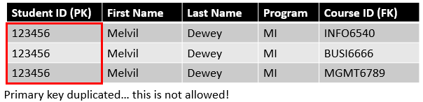
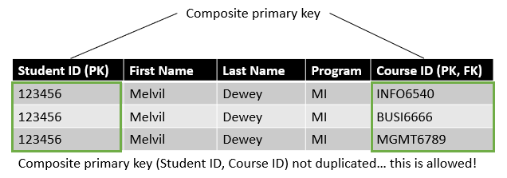
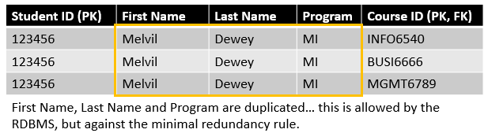
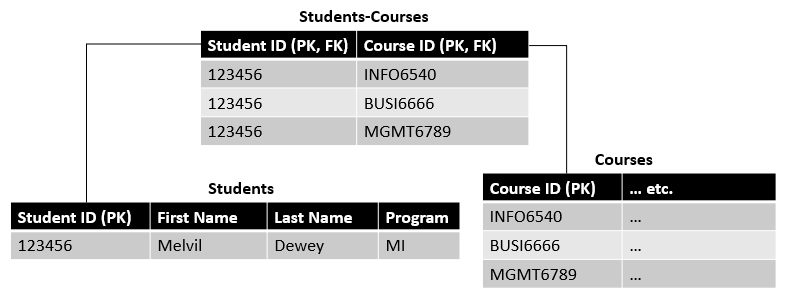

3 Relational databases (Pt. 2)
3.1 Learning objectives
Concepts
- Table and fields
- Table types
- Relationship types
- Entity-Relationship Diagrams
Practical skills
- Create an Entity-Relationship Diagram (team assignment #2)
- Optimize the structure of your database (team assignment #2)
3.2 Introduction
Until now, we have been thinking about database and its subjects, attributes and rules without considering their implementation in an actual relational database and the additional rules that relational databases impose on our design. In this chapter, we will begin to transform our database subjects, attributes and rules into a database model with tables, fields and relationships.
3.3 Tables and fields
We already know from the short introduction to relational databases in the previous chapter that our subjects are represented as tables and their attributes as fields (columns) in those tables. However, because of the rules of relational database design, converting subjects to tables and attributes to fields is not simply a matter of changing the labels in the design.
Here are the two most important rules to follow when creating tables:
Each table represents a single subject. Gummies and their attributes are stored in one table, orders in another, customers in another, and so on. The set of fields in a table defines the subject, and it would make no sense for a subject to be defined by a gummy name, description, flavour, price as well as by a customer name, a delivery address and a phone number. When adding fields to a table, it is important to ask whether the fields are defining characteristics of the subject represented. Some associative tables (we explain what those are below) can be created for the specific purpose of capturing the relationship between two other tables or accommodate the possibility for an attribute to have multiple values for the same record. Such tables are exceptions as their function is not to represent subjects.
Each table has at least one field that will be the primary key. The primary key is a unique identifier for each record stored in the table (the same primary key cannot appear twice in the table). The primary key is also used to reference a record from one table in another table. The field that makes the reference is called a foreign key. For instance, in the gummybox_sales database, customers will be represented in a customer table that contains a primary key named id. Records in another table (e.g., the order table) might need to indicate which customer placed the order. Rather than repeating all the customer information in the order table, each record instead simply needs to includes the id of the customer. In the order table we would then have a field named customer_id that would be a foreign key (i.e., the primary key of another table).
There are also several important principles that fields should follow:
Each field should be unique in the entire database (except foreign keys). You should avoid repeating the same fields in different tables. For instance, if country is an attribute of more than one subject in your database, you should consider using a validation table (we explain what those are below) called country and include in your other tables a foreign key referencing the country table.
Each field represents a distinct attribute of the subject. A field should not combine, for example, the birth date and the age, the height and weight and any other attributes of the subject. Each attribute has its field.
Each field contains a single value that cannot be deconstructed into smaller ones. The name of a person is an example of a field that can be deconstructed into smaller ones (e.g., first name and last name).
Fields should not contain calculated values. For instance, we could be tempted to include the total price for an order in an order table. However, this would most likely not be optimal if the total price of an order can be calculated by multiplying the number of units included in the order by their individual price.
3.3.1 Naming tables and fields
Hernandez (2013) proposes some guidelines for naming your tables and fields to make your database easier to understand and navigate. The table below includes all of Hernandez’s recommendations.
Characteristics of a good table and field names
| Rule | Bad | Good |
|---|---|---|
| Accurate, unique, and meaningful to the organization | TableA | Orders |
| Refers to a single subject (unless it is an associative table) | Faculties/Departments | Make two tables |
| As short as possible | CoursesOffered | Courses |
| Do not use words like list, records, data | CoursesList | Courses |
| Does not use acronyms | SRIs | Student_Ratings_of_Instruction |
| Does not unduly restrict the data that can be entered into the table | Fall_courses | Courses |
3.3.2 Table types
There are three basic table types that you will encounter in your database:
Data tables typically represent the main subjects of your database (e.g., objects, people, events). They usually have a single primary key, and they gather data that provides information about the subject represented in the table.
Associative tables create associations between the subjects in your database (e.g., students-courses, products-orders, customers-orders). They have typically had multiple foreign keys that together will form the composite primary key. Some, but not all, of the main subjects of a database design can be associative tables.
Validation tables (look-up tables) are used for data quality and validation purposes. They contain the list of possible values that a field can take. For instance, your grade for this class has a limited set of possible values (A+, A, A-, B+, B, B-, F, AUD, ILL, INC, IP, P). A validation table can but does not have to be used to store these possible values to ensure that a user cannot enter the grade “G” or “Banana” in the grade field of the database. Validation tables are also useful for reducing the memory requirement of your database. You can replace large data types, such as character strings, with smaller data types, such as numbers. We will learn more about data types in the next chapter.
3.4 Relationship types
Relationships are critical determinants of the structure of your database. They are represented by foreign keys in some of your tables linked to other tables’ primary keys. Luckily, relationships are a relatively simple concept that is easy to implement in your database design process. There are only three basic kinds of relationships, so let’s take a quick look at them.
3.4.1 One-to-one relationship
This relationship exists when one record in a table can only be associated with one record in another table and vice versa. A one-to-one relationship may exist, for instance, between the office space and the personnel of an organization, as long as nobody is allowed to share an office or to have two offices. These relationships are rare in reality since it often makes more sense to bring back to combine tables with one-to-one relationships in a unique table. However, there are situations where the use of one-to-one relationships can be required or appropriate, for example:
- Security: you may want to store sensitive information about an individual in a different table that only some authorized users can access.
- Semantics: even though you could include information about the office space in your employees table, you might not want to store information about your offices with your employees table. First names, last names and birth dates are characteristics of people, but buildings and room numbers are not.
3.4.2 One-to-many relationship
A one-to-many relationship exists when one record in a table can be associated with one or more records in another table. It is the most frequent type of relationship in properly designed databases. A typical example is the customers table and the orders table. A single customer record can be associated with multiple orders, but only one customer can be associated with a specific order.
3.4.3 Many-to-many relationship
Many-to-many relationships exist when one record in a table can be associated with multiple records in another table and vice versa. A typical example is a product that can be part of multiple orders and an order that can contain multiple products. Another example is the relationship between university courses and students. A single course can have multiple students. Inversely, a single student can be enrolled in multiple courses.
3.4.3.1 Issues with many-to-many relationships
These relationships are widespread in the world, and they are great. However, they also raise potential issues that need to be resolved in your database design. By definition, these relationships imply that the non-duplication of the primary key rule will be violated so that something that your RDBMS will not allow.

One solution for that is to use a composite primary key. This means your table has two or more primary keys instead of one. In practice, that means that every combination of the two fields forming the key are not allowed to be repeated in the table.

However, the composite key solution is often not optimal since it can create a lot of redundancy in your table, which you want to minimize as much as possible.

That is the purpose of associative tables. They are tables created with the specific purpose of linking your subjects together to prevent primary key duplication and minimize redundancy.

Now the Melvil Dewey information is not repeated in the database for every course they are registered for. In fact, none of the information is repeated other than the primary and foreign keys.
3.5 Entity-relationship diagrams
An entity-relationship diagram (ERD) is a visual representation of your database that typically includes every table along with their fields and the relationship between them. The ERD is a helpful tool for designing your database because it helps you visualize your table and fields and their relationship, making it easier to spot mistakes and inconsistencies. It is also a valuable part of your database documentation as it can give users a good understanding of the data to use it more effectively. The video below demonstrates how to draw ERDs using diagrams.net (formerly draw.io).
You should watch the video even if you already know how to use diagrams.net or are not planning to use it for the course. It provides general guidance on ERD and database design.
When you are at the very early stages of your design and still very unclear about what your tables may look like, it can be a good idea to try things out on a whiteboard (or paper) to get a quick sense of what works and what doesn’t.
3.6 Homework
The homework for this week is to start designing your database with your teammates and working on individual lab #2.